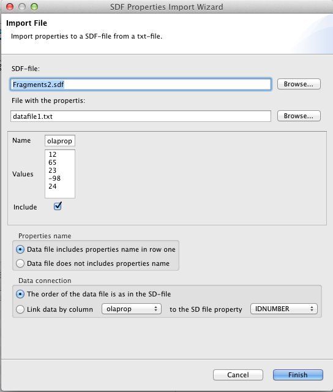
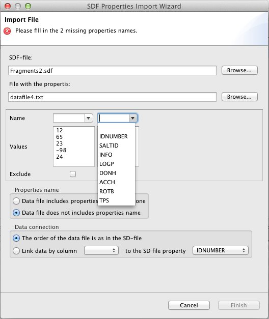

Importing properties to a SD-file
Introduction
Sometimes you have a file with some properties that you want to add to molecules in a SD-file. In Bioclipse this can be done by selecting both the SD-file and the file with the properties in Bioclipse navigator field, then right-clicking on either of them and choose “Add properties” in the popup-menu that appears. If you only have one of the files in Bioclipse workspace, i.e. is visibly in the navigator field; don't worry, just right click on it and choose “Add properties” from the popup-menu. You can add the other file later when the wizard has opened. Observe that even though it is possible to select more than two files, this wizard only add one file with properties to one SD-file.
The input data
Before describing how this wizard works, it is worth to mention a few words about the formart of the file that contains the data that is to be added to the SD-file. The wizard surports two different formarts; one where the data is separated by a tab and then the common CSV-formart.
The data in the tab-separated file is supposed to be in a simpel text file (that kind of file that you work with in e.g. Notepad in Windows). In this file all the data for a specific molecule should be on the same row, and the different properties for that molecule have to be tab-separated. If the data file contains the names of the properties then they are suposed to be on the first (top) row of the file.
When using use the CSV-formart: All properties values for a specific molecule should be on the one row. In case there's name on the different properties, then they should be by them self on the first row.
Choosing the files to merge

When open the wizard as described above, the two files will appear in the two top fields of the wizard (see the figure to the right). If only one file was selected then it appears in the corresponding field, and the other can be chosen by clicking on the button with the text “Browse...” just to the right of the field. Doing so will open a open-file-dialog where you can search for the file you want. This button can of cause also be used to choose a different file.
When a data file has been selected, then the wizard will read it. The result can be seen in the square below the file-settings. In the row with the label “Name” infront of it are the names if the different properties, or to be exact; the top row of the data file. Let's simply call it “the name-row” from now on. Below that are the values from the next five rows in the data file, in the rows with the label “Values” infront. If all seams ok, it is just to press the ok-button at the bottom of the wizard and the properties will be added to the molecules in SD-file.
The result is saved in a new file in the same director as the file you selected when you opened the wizard, and it will have almost the same name as the old SD-file. The difference is that the result file will end with “_new”. I.e. if your SD-file is called “My_molecules.sdf”, then the resulting file will have the name “My_molecules_new.sdf”.
Note that if any property has the same name as a property in the SD-file the value of that property will be replaced with the value from the data file. Also note that the names are case sensitive, e.g. the name “ID” is not the same as “id”.
Change the name of a property
Some times you might want to change the name of one or several properties before adding them, the easiest way to do this is to just click in the field with the name of that property and write the new name on it. Note that you can not link properties that you have namned this way (what it means to link properties is described in the section “The data connection box” below).
Exclude a property
If the data file by some reason contains a property that you do not want to add to the molecules in the SD-file, then you can exclude it. This is done by clicking in the check-box beneath the column of that property, it's in the row with the label “Exclude” infront, just at the botom of the square showing the properties.
No properties name in the data file

If the data file lacks the property names, i.e. the first row in the file contains property values as well. Then the name-row (the one with the label “Names” infront) will contain the values from the first row of the data file. But this is probably not what you wanted, to solve this just select the option “Data file does not includes properties name” in the box called “Properties name” just below the square with the properties value mention above. Then the values in the name-row will jump down to the top row of the rows with the name “Values” in front, and in the name-row there will appear a drop-down-menu for each property. See the picture to the right. Now you can either just write the name of the property in it or, if you have selected a SD-file as well, you can choose one of the property names used by the SD-file. Note that if doing so the value of that property will be replaced by the value from the data file. Also note that when you add a property name by writing the name in the box you can not link it, just as when you rename a property.
The data connection box
There is one box with radio-buttons that has not been mention yet. It's the one at the bottom called “Data connection”, with this you can control how the data is added to the SD-file. The first, and default, option states “The order of the data file is as in the SD-file”. What this mean is that the first row of properties in the data file will be added to the first molecule in the SD-file, the second row to the second molecule, etc.
With the other option in that box you can chose to link one of the properties in the data file to another in the SD-file. This means that if the value of the linked properties are the same, then the other properties of that row in the data file will be added to that molecule. Which properties that are to be linked is chosen in respective combo-box on the same line as the radio button for this option.
This is usefully if you for example have a SD-file with many molecules, but there are only some of them that you want to add new properties to and/or change the values of one or several existing properties. Let's e.g. say that all molecules in the SD-file has a property called “IDNUMBER”, that represent a id-number for the molecules. Then if you have the id-numbers of the molecule you want to change as a property in your data file (along with the other properties), let's say that you call that property “mol_id”. Now it's easy manipulate only the molecules that you want to manipulate: Select the last alternative in the “Data connection box” and choose “mol_id” in the left combo-box and “IDNUMBER” in the right. Note that when using this option it will take much longer time to add the properties to the molecules, because the data file will have to be read several times.